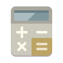

Features » Auction Specific
» Auction Specific
Auction Specific Features
Types of Auctions Supported
Buy Now Only Listings/Auctions
Standard Auctions
This is the base auction format where clients bid against each other for single or groups of items. Whatever is described within the details of the
auction is what up for bid. There are a number of configurations possible within the software to customize the bidding experience for your clients like
buy now option, proxy bidding,....etc
Buy Now Option for Auctions

Allow your sellers to sell items immediately without the need of going through the auction process. You can allow your clients to add this
feature to all their auctions. Your clients can choose to make their auction a buy now only auction without bidding at all. In fact many
only use the buy now only auction feature and just relabel it something other than "auction" since there would be no bidding. .
Reverse Auctions
Much like standard auctions except the bidding decreases in value instead of increasing. With these types of auctions the roles are reversed between
the buyer and seller. The client placing the auction is the one purchasing. This type of bidding is most used in bid for work/supplies or
request for quote sites. This allows the bidder or supplier of the service or product compete against other sellers in price to deliver to the
buyer
Inventory Item Auctions
Dutch Auctions
With this type of auction there are multiple items up for auction and each bidder can win one or more of the total quantity. While the final bid paid
for each item is determined by the lowest winning bidder the higher bidders are guaranteed their full quantities. Make sure to read the details on
this feature as we've had clients with other definitions of what a dutch auction is.
Auction Supporting Features
Final/Closing Fees
You can charge a fee to the seller at the end of the auction based on the final bid of the auction. This fee is only charged to the seller and only
if the auction was successful. You can set the software to charge a percentage or flat fee based on the final price of the auction.
Multiple Auction Bidding Configurations
With auctions in our system you can configure bidding in a number of ways. There is proxy bidding where the bidder inserts their max bid and
the system bids for them up to that max. There is straight bidding where bids are entered without a proxy system. You can allow straight
bidding till the reserve met then use proxy bidding. Allow the current high bidder to raise their bid if you like.
Active Bids Status Page
Auction Extension/Endless Auction
This can also be called the anti-sniper bidding feature. One thing that can frustrate bidders on your site is to lose an auction at the last minute
because there's not enough time to get a bid in. Many bidders wait till the last few seconds of an auction to bid just for this reason. This feature
will automatically extend an auction by a certain amount of time if a bid is received within a certain amount of time of the auction end. This makes
both your seller (higher prices) and buyers (chance to win) happy.
Ban From Bidding Feature
Sellers can stop individual users from bidding on their systems. There can be a number of reasons ranging from the need to ban their
competition from bidding on their auctions to simply not liking the experience with a specific buyer and the desire to not deal with
them any more...for what ever reason this gives your sellers better control over their auctions on the site certainly raising their
comfort level with your site.
Feedback System
Bid History for Auctions
This feature allows clients to view the bid history from within the auction details page. There are configurations so that you can allow the
bid history link to appear when the auction is still live or only after the auction has expired.
Client Can Edit Till First Bid
Proxy Bidding for Standard Auctions
This feature allows aucton bidders to set their maximum bid they are willing to go and not need to return to the auction to make sure they are not outbid
within their price range. The system will bid for the proxy bidder automatically until their max is met. This essentially allows the bidder to make
one hassle free bid to their max where they would only pay that max if there are other bidders willing to bid against them.
Allow to Bid Feature
Set Auction Bid Start and End Times
Your client can have the ability to set exact start and end times for their auctions. You as the admin control whether this ability is allowed or not.
Once the auction is placed it is visible on the client side but will not accept bids until the start time set within the auction placement process. The
auction will end at the exact time set by the seller unless you have the endless/anti-sniper feature turned on.
Bid Increment Management
System Generated Emails within the Auction Feature
These emails keep the sellers and buyers apprised in their status within the auction. If an action is required in the auction the outbid bidder is prompted to action.
- Bid Received - This email is sent when the bid is actually accepted by the system. Within this email the bidder is notified if they are the current high bidder or is a proxy bid in the system has already outbid them.
- Outbid Notice - If a bidder had been the high bidder in an auction and were subsequently outbide the system would notify them of the status prompting further bidding action.
- Closing Winning Bidder - This is sent after the auction has closed successfully. The winning bidder(s) are notified that they are the winner. This email contains a link to the expired auction as well as the email contact of the seller.
- Closed Auction to Seller - This email firstly notifies that the auction closed and then whether the auction was successful. If the auction was successful the winning bidders and their email contact are included.